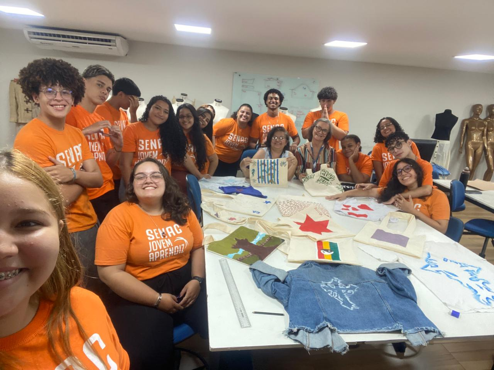

Galeria



O projeto "Ser Tão Criativo" é uma startup de impacto social desenvolvida por jovens aprendizes do Senac, com foco em upcycling de resíduos de jeans. Inspirado no modelo do Food To Save, o nosso projeto propõe a venda de “sacolas surpresa” com peças jeans reaproveitadas e transformadas criativamente.
Além da sustentabilidade ambiental, o projeto tem forte compromisso social: as peças serão produzidas por mulheres em situação de vulnerabilidade (vítimas de violência, com transtornos como depressão e ansiedade), oferecendo oficinas, terapia ocupacional, inclusão social e geração de renda
